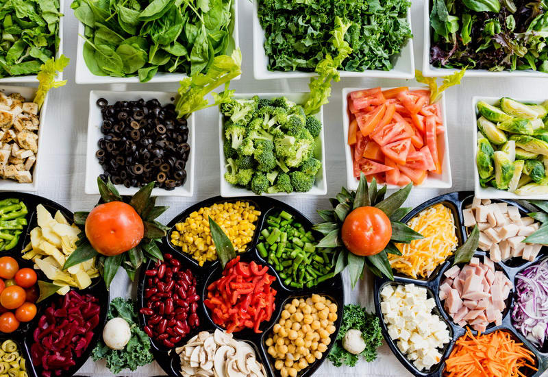

Здорове харчування також є дуже важливою частиною туризму і здорового способу життя.
Це обумовлено тим, що подорожі потребають багато сил та енергії, а для цього потрібно правильно харчуватися.
Я підібрала для вас деякі поради для того, щоб вам були зрозумілими основи здорового харчування:
- Пийте багато води. Поставте за мету випивати 8 склянок води щодня. Фрукти і овочі містять воду і можуть поповнити Вашу денну потребу.
- Снідайте кожен день. Люди, які снідають, мають меншу ймовірність переїдати вдень. Сніданок також дає вам енергію і допомагає думати і вчитися.
- Вибирайте цільно-зернові продукти.
- Вибирайте кольорові овочі щодня.
- Вибирайте свіжі або нарізані фрукти частіше, ніж фруктовий сік. У фруктовому соку міститься мало, або зовсім не міститься харчових волокон.
- Обережно використовуйте жири і масла.
- Обережно споживайте солодощі. Обмежте їжу і напої, що містять багато цукру.
- Майте маложирні і несолодкі закуски під рукою вдома, на роботі або в дорозі - з тим щоб вгамувати голод і не викликати переїданні.
- Харчуйтеся три рази в день замість пропускання прийому їжі або вживання закусок замість їжі.
- М'ясу воліємо птицю, птиці - рибу, а рибі - морепродукти. Сахару - мед, а меду - сухофрукти.
Більше дізнатись про здорове харчування ви можете натиснувши тут
Ющенко Олександра
Чернігів 2019